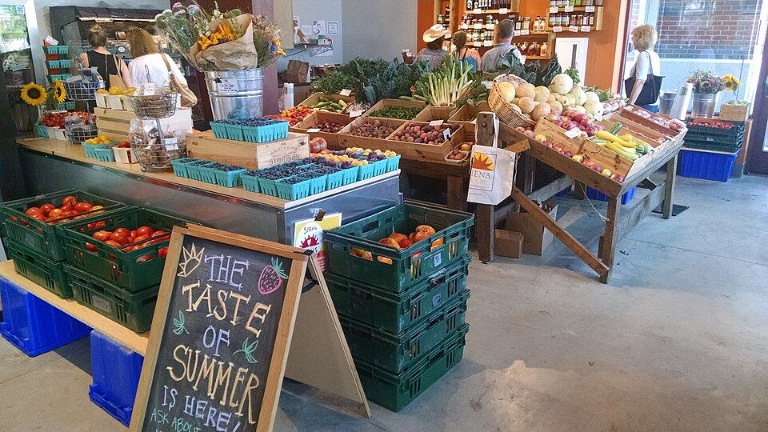
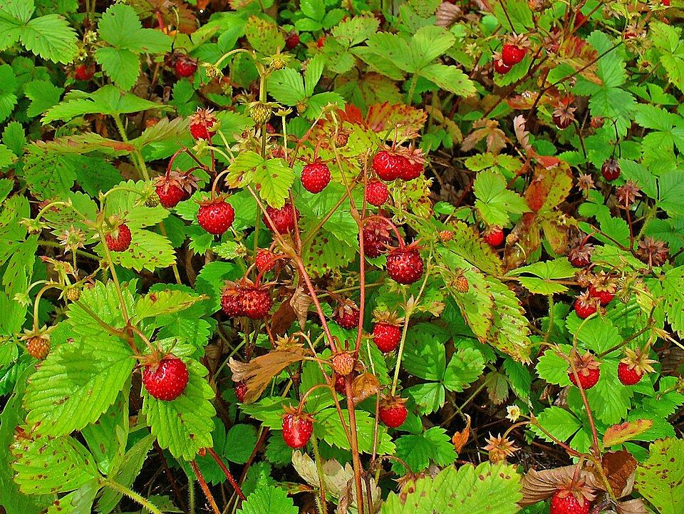
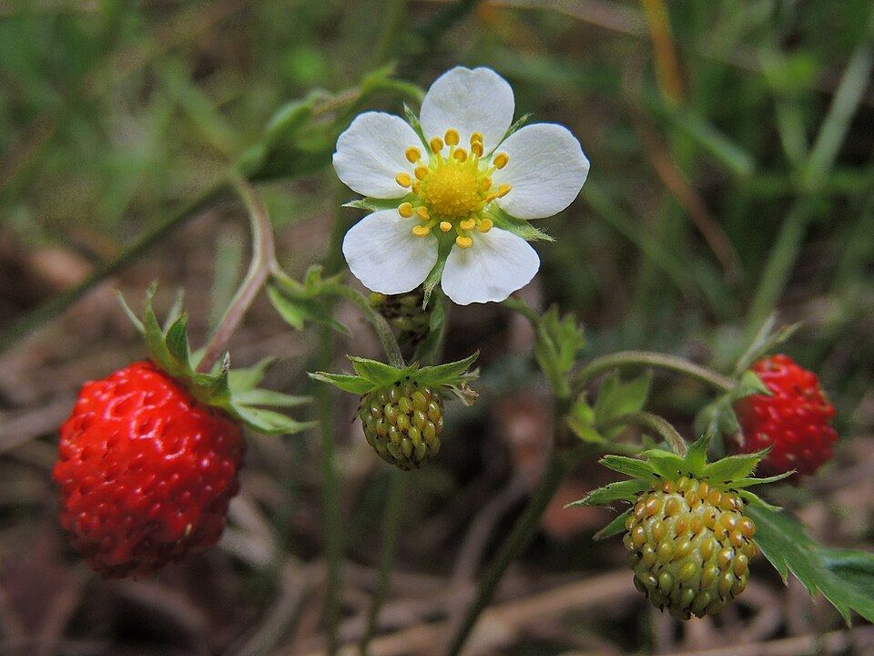
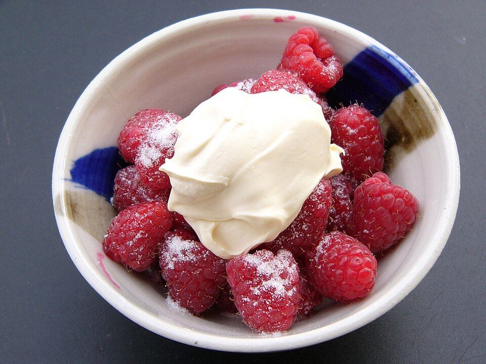
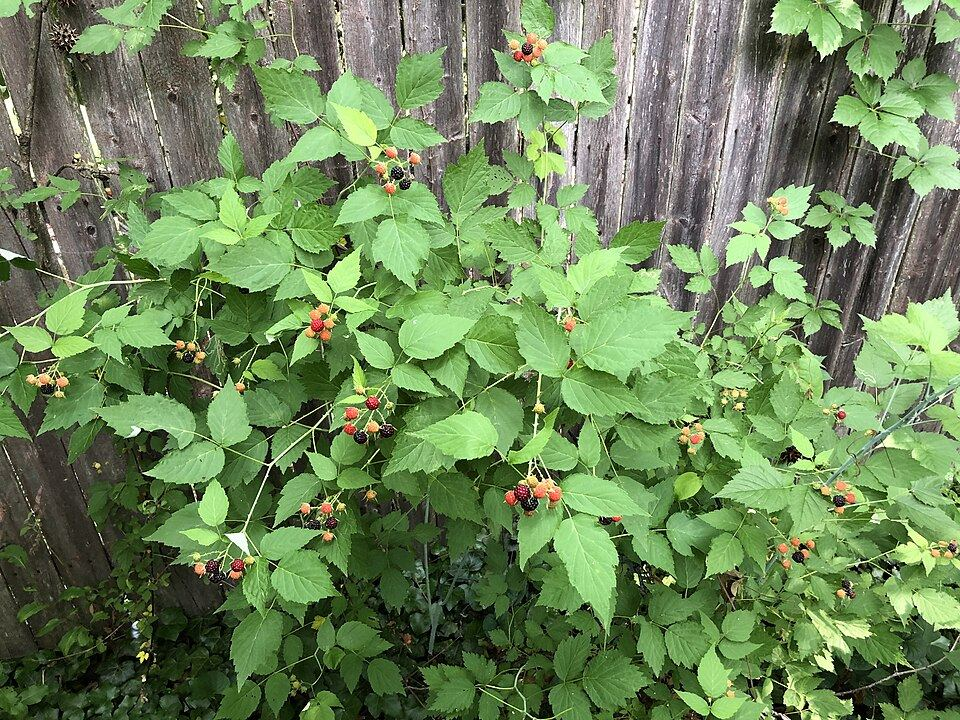
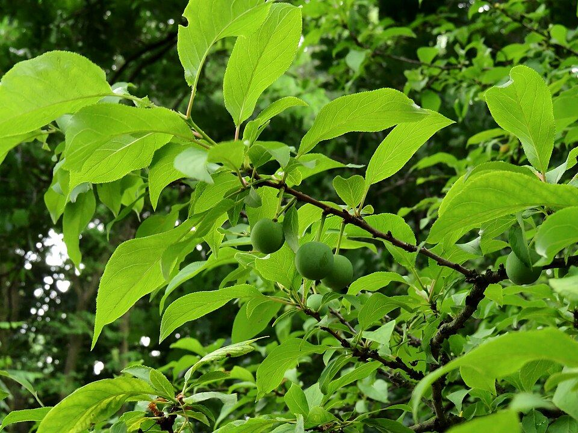
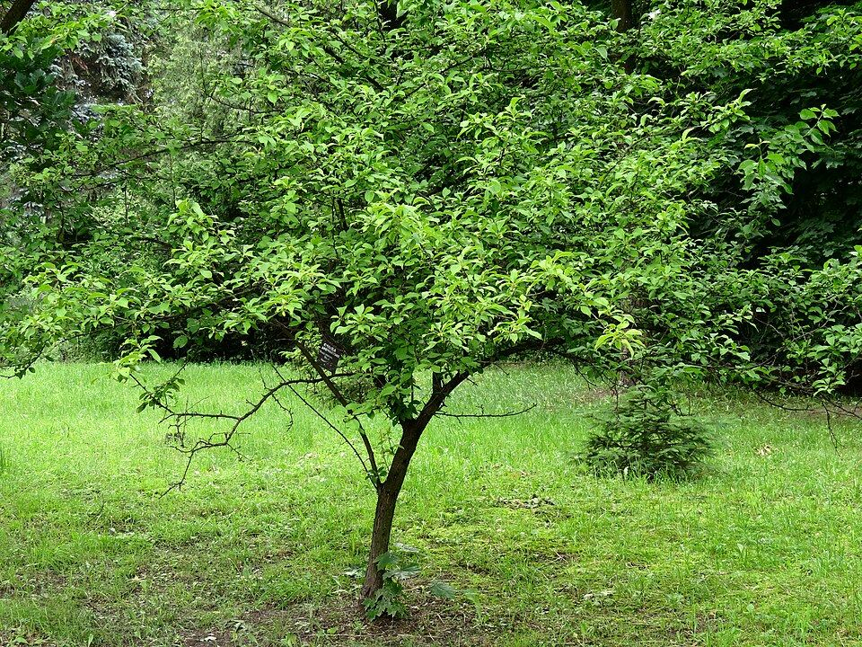

What's ripe this morning
We update this before the gate opens. Hours move with the weather and the berries, so check here before you drive out.

From the field




A box every week
Sixteen weeks of whatever is best that week, June through September. Pick up at the farm or our Saturday market stand.
Season
Strawberries, mid-June
Pick your own or take home a flat already picked. The season runs about three weeks, so come early.
Raspberries, early July
Pick-your-own summer raspberries, right as the strawberries wind down.
Wild plums, August
The tart little plums the farm is named for. Sold by the quart, and as jam at the stand.
Pumpkins, October
A small patch for carving and pie, weekends only.
Fall CSA add-on, September
Squash, apples and storage onions for members who want a few extra weeks.
The farm

Three generations have farmed this ground, and the wild plum thicket by the road has been here longer than any of us. We grow what this land is good at and sell it straight to the families who eat it.On a real site, this part is in the farmer's own words: why they farm, and what a good morning here looks like.
